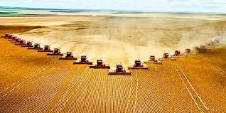

O campo é responsável por produzir os alimentos que chegam às mesas nas cidades. Frutas, legumes, cereais, leite, carne e tantos outros produtos vêm da agricultura familiar e das grandes lavouras. Valorizar a produção rural é respeitar o trabalho de quem cultiva, planta e colhe diariamente, com esforço e amor pela terra.

"Nunca pensei que o arroz que comemos vinha de tão longe. Agora dou mais valor!" — Lucas, estudante urbano
"Produzimos com carinho, esperando que chegue fresco às famílias da cidade." — Francisca, agricultora
"Ver nossos produtos nas feiras da cidade é motivo de orgulho." — Paulo, feirante